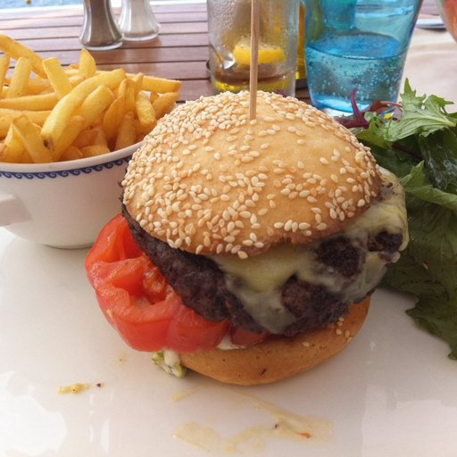
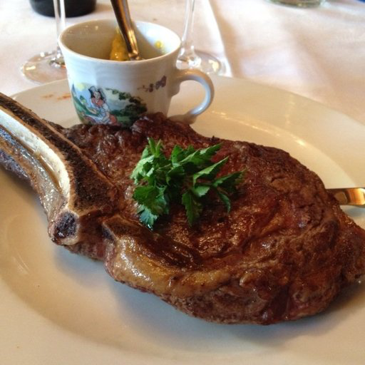

import datasets
import transformers
import torchvision.transforms
import evaluate
import numpy as np05wk-1: Food-101 이미지자료 분류

1. 강의영상
2. ref
ref: https://huggingface.co/docs/transformers/tasks/image_classification
3. imports
4. 코드정리1
## Step1
### A. 데이터불러오기
food = datasets.load_dataset("food101", split="train[:5000]")
food = food.train_test_split(test_size=0.2)
### B. 전처리하기
image_processor = transformers.AutoImageProcessor.from_pretrained("google/vit-base-patch16-224-in21k")
normalize = torchvision.transforms.Normalize(mean=image_processor.image_mean, std=image_processor.image_std)
size = (
image_processor.size["shortest_edge"]
if "shortest_edge" in image_processor.size
else (image_processor.size["height"], image_processor.size["width"])
)
_transforms = torchvision.transforms.Compose([
torchvision.transforms.RandomResizedCrop(size),
torchvision.transforms.ToTensor(),
normalize
])
def transforms(examples):
examples["pixel_values"] = [_transforms(img.convert("RGB")) for img in examples["image"]]
del examples["image"]
return examples
food = food.with_transform(transforms)
## Step2
### A. 인공지능을 만들기 위한 준비코드
labels = food["train"].features["label"].names
label2id, id2label = dict(), dict()
for i, label in enumerate(labels):
label2id[label] = str(i)
id2label[str(i)] = label
### B. 인공지능 모델만들기
model = transformers.AutoModelForImageClassification.from_pretrained(
"google/vit-base-patch16-224-in21k",
num_labels=len(labels),
id2label=id2label,
label2id=label2id,
)
## Step3
### A. 트레이너생성을 위한 준비
data_collator = transformers.DefaultDataCollator()
accuracy = evaluate.load("accuracy")
def compute_metrics(eval_pred):
predictions, labels = eval_pred
predictions = np.argmax(predictions, axis=1)
return accuracy.compute(predictions=predictions, references=labels)
training_args = transformers.TrainingArguments(
output_dir="my_awesome_food_model",
remove_unused_columns=False,
eval_strategy="epoch",
save_strategy="epoch",
learning_rate=5e-5,
per_device_train_batch_size=16,
gradient_accumulation_steps=4,
per_device_eval_batch_size=16,
num_train_epochs=3,
warmup_ratio=0.1,
logging_steps=10,
load_best_model_at_end=True,
metric_for_best_model="accuracy",
push_to_hub=False,
report_to="none"
)
### B. 트레이너 생성
trainer = transformers.Trainer(
model=model,
args=training_args,
data_collator=data_collator,
train_dataset=food["train"],
eval_dataset=food["test"],
tokenizer=image_processor,
compute_metrics=compute_metrics,
)
### C. 트레이너를 이용한 학습
trainer.train()
## Step4 Fast image processor class <class 'transformers.models.vit.image_processing_vit_fast.ViTImageProcessorFast'> is available for this model. Using slow image processor class. To use the fast image processor class set `use_fast=True`.
Some weights of ViTForImageClassification were not initialized from the model checkpoint at google/vit-base-patch16-224-in21k and are newly initialized: ['classifier.bias', 'classifier.weight']
You should probably TRAIN this model on a down-stream task to be able to use it for predictions and inference.
[186/186 02:18, Epoch 2/3]
| Epoch | Training Loss | Validation Loss | Accuracy |
|---|---|---|---|
| 0 | 2.678500 | 2.525543 | 0.814000 |
| 2 | 1.571600 | 1.601845 | 0.893000 |
TrainOutput(global_step=186, training_loss=2.4154545312286704, metrics={'train_runtime': 139.0707, 'train_samples_per_second': 86.287, 'train_steps_per_second': 1.337, 'total_flos': 9.232831524962304e+17, 'train_loss': 2.4154545312286704, 'epoch': 2.976})# Step4
classifier = transformers.pipeline("image-classification", model="my_awesome_food_model/checkpoint-186")Hardware accelerator e.g. GPU is available in the environment, but no `device` argument is passed to the `Pipeline` object. Model will be on CPU.ds = datasets.load_dataset("food101", split="validation[:10]")
image = ds["image"][0]
classifier(image)[{'label': 'beignets', 'score': 0.9690792560577393},
{'label': 'chicken_wings', 'score': 0.6440168619155884},
{'label': 'bruschetta', 'score': 0.6130839586257935},
{'label': 'prime_rib', 'score': 0.5649157762527466},
{'label': 'ramen', 'score': 0.5616005063056946}]5. 살펴보기
A. 데이터불러오기
- 원래는 자료가 많음
food_full = datasets.load_dataset("food101")
food_full
# 자료가 약 10만개, 자료형은 DatasetDict 임 DatasetDict({
train: Dataset({
features: ['image', 'label'],
num_rows: 75750
})
validation: Dataset({
features: ['image', 'label'],
num_rows: 25250
})
})- train에서 5000장만 가져옴
food5000 = datasets.load_dataset("food101", split="train[:5000]")
food5000
# 자료는 5000개, 자료형은 Dataset Dataset({
features: ['image', 'label'],
num_rows: 5000
})- food5000에서 8:2로 데이터를 분리
food = food5000.train_test_split(test_size=0.2)
foodDatasetDict({
train: Dataset({
features: ['image', 'label'],
num_rows: 4000
})
test: Dataset({
features: ['image', 'label'],
num_rows: 1000
})
})B. 데이터 살펴보기
- 이미지를 보는 방법
img = food['train'][0]['image']
img
type(img) # img의 자료형PIL.Image.Image- 이미지에 해당하는 라벨을 같이 확인하는 방법
# food['train'][0]['image'] --- # 0번이미지
food['train'][0]['label'] # 0번이미지에 해당하는 라벨5320이 의미하는바가 무엇이지?
labels = food['train'].features['label'].names # 라벨들의 정보들
labels[:5]['apple_pie', 'baby_back_ribs', 'baklava', 'beef_carpaccio', 'beef_tartare']labels[20] # 20이라는 숫자가 의미하는 음식이름은 'chicken_wings' 임'chicken_wings'정리하면
img_num = 11
print(labels[food['train'][img_num]['label']])
food['train'][img_num]['image']bruschetta
- 이미지를 확인하면서 느낀점: 크기가 다름 \(\to\) 각 이미지의 크기를 조사하고 싶다면?
# 방법1
food['train'][3]['image'].__str__().split(' ')[-3].split("=")[-1].split("x")
sizes = [l['image'].__str__().split(' ')[-3].split("=")[-1].split("x") for l in food['train']]
sizes[:4][['512', '512'], ['512', '512'], ['512', '512'], ['512', '512']]# 방법2
sizes = [l['image'].size for l in food['train']]
sizes[:4][(512, 512), (512, 512), (512, 512), (512, 512)]- 이미지의 크기가 서로 다르네? (텍스트의 길이가 서로 다르듯이?)
- 인공지능입장에서는 이렇게 이미지의 크기가 통일되어 있지 않다면 싫어하겠는걸?
- 이미지를 resize 하여 크기를 통일시켜주는 코드가 어딘가 반드시 필요하겠군..
C. torchvision.transforms
- 이미지자료 하나 받아두기
img = datasets.load_dataset("food101",split="train[:1]")[0]['image']
img# torchvision.transforms.RandomResizedCrop
# 예시1 – 사이즈를 224,112로 조정
자르고크기조정하기 = torchvision.transforms.RandomResizedCrop((224,112))자르고크기조정하기(img)#
# 예시2 – 사이즈를 224,224로 조정
# 방법1
자르고크기조정하기 = torchvision.transforms.RandomResizedCrop((224,224))
자르고크기조정하기(img)# 방법2
자르고크기조정하기 = torchvision.transforms.RandomResizedCrop(224)
자르고크기조정하기(img)#
# torchvision.transforms.ToTensor()
# 예시1
텐서화하기 = torchvision.transforms.ToTensor()텐서화하기(img)tensor([[[0.1216, 0.1137, 0.1098, ..., 0.0039, 0.0039, 0.0000],
[0.1255, 0.1216, 0.1176, ..., 0.0039, 0.0039, 0.0000],
[0.1294, 0.1255, 0.1255, ..., 0.0039, 0.0000, 0.0000],
...,
[0.2588, 0.2745, 0.2863, ..., 0.3765, 0.3882, 0.3922],
[0.2353, 0.2471, 0.2667, ..., 0.3373, 0.3373, 0.3373],
[0.2235, 0.2275, 0.2471, ..., 0.3333, 0.3176, 0.3059]],
[[0.1373, 0.1294, 0.1255, ..., 0.1020, 0.1020, 0.0980],
[0.1412, 0.1373, 0.1333, ..., 0.1020, 0.1020, 0.0980],
[0.1451, 0.1412, 0.1412, ..., 0.1020, 0.0980, 0.0980],
...,
[0.2471, 0.2627, 0.2745, ..., 0.3647, 0.3765, 0.3882],
[0.2235, 0.2353, 0.2549, ..., 0.3255, 0.3333, 0.3333],
[0.2118, 0.2157, 0.2353, ..., 0.3216, 0.3137, 0.3020]],
[[0.1412, 0.1333, 0.1294, ..., 0.0902, 0.0902, 0.0863],
[0.1451, 0.1412, 0.1451, ..., 0.0902, 0.0902, 0.0863],
[0.1490, 0.1451, 0.1529, ..., 0.0902, 0.0863, 0.0863],
...,
[0.1725, 0.1882, 0.2000, ..., 0.2431, 0.2549, 0.2667],
[0.1490, 0.1608, 0.1804, ..., 0.2039, 0.2118, 0.2118],
[0.1373, 0.1412, 0.1608, ..., 0.2000, 0.1922, 0.1804]]])텐서화하기(img).shapetorch.Size([3, 512, 384])#
# 예시2 – 자르고크기조정하기 와 텐서화하기를 동시에 사용하는 경우
텐서화하기(자르고크기조정하기(img)).shapetorch.Size([3, 224, 224])자르고크기조정하기(텐서화하기(img)).shapetorch.Size([3, 224, 224])#
# torchvision.transforms.Normalize
# 예시1
표준화하기 = torchvision.transforms.Normalize(mean=[10,20,30],std=[0.5,1.0,1.5])표준화하기는 각 채널별로,mean을 뺸 뒤std를 나눈 계산값을 리턴한다.
표준화하기(텐서화하기(img)) # 숫자들이 계산됨tensor([[[-19.7569, -19.7725, -19.7804, ..., -19.9922, -19.9922, -20.0000],
[-19.7490, -19.7569, -19.7647, ..., -19.9922, -19.9922, -20.0000],
[-19.7412, -19.7490, -19.7490, ..., -19.9922, -20.0000, -20.0000],
...,
[-19.4824, -19.4510, -19.4275, ..., -19.2471, -19.2235, -19.2157],
[-19.5294, -19.5059, -19.4667, ..., -19.3255, -19.3255, -19.3255],
[-19.5529, -19.5451, -19.5059, ..., -19.3333, -19.3647, -19.3882]],
[[-19.8627, -19.8706, -19.8745, ..., -19.8980, -19.8980, -19.9020],
[-19.8588, -19.8627, -19.8667, ..., -19.8980, -19.8980, -19.9020],
[-19.8549, -19.8588, -19.8588, ..., -19.8980, -19.9020, -19.9020],
...,
[-19.7529, -19.7373, -19.7255, ..., -19.6353, -19.6235, -19.6118],
[-19.7765, -19.7647, -19.7451, ..., -19.6745, -19.6667, -19.6667],
[-19.7882, -19.7843, -19.7647, ..., -19.6784, -19.6863, -19.6980]],
[[-19.9059, -19.9111, -19.9137, ..., -19.9399, -19.9399, -19.9425],
[-19.9033, -19.9059, -19.9033, ..., -19.9399, -19.9399, -19.9425],
[-19.9007, -19.9033, -19.8980, ..., -19.9399, -19.9425, -19.9425],
...,
[-19.8850, -19.8745, -19.8667, ..., -19.8379, -19.8301, -19.8222],
[-19.9007, -19.8928, -19.8797, ..., -19.8641, -19.8588, -19.8588],
[-19.9085, -19.9059, -19.8928, ..., -19.8667, -19.8719, -19.8797]]])숫자들이 어떻게 계산되었는가?
print("첫번째 채널(R)")
(텐서화하기(img)[0] - 10)/0.5, 표준화하기(텐서화하기(img))[0]첫번째 채널(R)(tensor([[-19.7569, -19.7725, -19.7804, ..., -19.9922, -19.9922, -20.0000],
[-19.7490, -19.7569, -19.7647, ..., -19.9922, -19.9922, -20.0000],
[-19.7412, -19.7490, -19.7490, ..., -19.9922, -20.0000, -20.0000],
...,
[-19.4824, -19.4510, -19.4275, ..., -19.2471, -19.2235, -19.2157],
[-19.5294, -19.5059, -19.4667, ..., -19.3255, -19.3255, -19.3255],
[-19.5529, -19.5451, -19.5059, ..., -19.3333, -19.3647, -19.3882]]),
tensor([[-19.7569, -19.7725, -19.7804, ..., -19.9922, -19.9922, -20.0000],
[-19.7490, -19.7569, -19.7647, ..., -19.9922, -19.9922, -20.0000],
[-19.7412, -19.7490, -19.7490, ..., -19.9922, -20.0000, -20.0000],
...,
[-19.4824, -19.4510, -19.4275, ..., -19.2471, -19.2235, -19.2157],
[-19.5294, -19.5059, -19.4667, ..., -19.3255, -19.3255, -19.3255],
[-19.5529, -19.5451, -19.5059, ..., -19.3333, -19.3647, -19.3882]]))print("두번째 채널(G)")
(텐서화하기(img)[1] - 20)/1.0, 표준화하기(텐서화하기(img))[1]두번째 채널(G)(tensor([[-19.8627, -19.8706, -19.8745, ..., -19.8980, -19.8980, -19.9020],
[-19.8588, -19.8627, -19.8667, ..., -19.8980, -19.8980, -19.9020],
[-19.8549, -19.8588, -19.8588, ..., -19.8980, -19.9020, -19.9020],
...,
[-19.7529, -19.7373, -19.7255, ..., -19.6353, -19.6235, -19.6118],
[-19.7765, -19.7647, -19.7451, ..., -19.6745, -19.6667, -19.6667],
[-19.7882, -19.7843, -19.7647, ..., -19.6784, -19.6863, -19.6980]]),
tensor([[-19.8627, -19.8706, -19.8745, ..., -19.8980, -19.8980, -19.9020],
[-19.8588, -19.8627, -19.8667, ..., -19.8980, -19.8980, -19.9020],
[-19.8549, -19.8588, -19.8588, ..., -19.8980, -19.9020, -19.9020],
...,
[-19.7529, -19.7373, -19.7255, ..., -19.6353, -19.6235, -19.6118],
[-19.7765, -19.7647, -19.7451, ..., -19.6745, -19.6667, -19.6667],
[-19.7882, -19.7843, -19.7647, ..., -19.6784, -19.6863, -19.6980]]))print("세번째 채널(B)")
(텐서화하기(img)[2] - 30)/1.5, 표준화하기(텐서화하기(img))[2]세번째 채널(B)(tensor([[-19.9059, -19.9111, -19.9137, ..., -19.9399, -19.9399, -19.9425],
[-19.9033, -19.9059, -19.9033, ..., -19.9399, -19.9399, -19.9425],
[-19.9007, -19.9033, -19.8980, ..., -19.9399, -19.9425, -19.9425],
...,
[-19.8850, -19.8745, -19.8667, ..., -19.8379, -19.8301, -19.8222],
[-19.9007, -19.8928, -19.8797, ..., -19.8641, -19.8588, -19.8588],
[-19.9085, -19.9059, -19.8928, ..., -19.8667, -19.8719, -19.8797]]),
tensor([[-19.9059, -19.9111, -19.9137, ..., -19.9399, -19.9399, -19.9425],
[-19.9033, -19.9059, -19.9033, ..., -19.9399, -19.9399, -19.9425],
[-19.9007, -19.9033, -19.8980, ..., -19.9399, -19.9425, -19.9425],
...,
[-19.8850, -19.8745, -19.8667, ..., -19.8379, -19.8301, -19.8222],
[-19.9007, -19.8928, -19.8797, ..., -19.8641, -19.8588, -19.8588],
[-19.9085, -19.9059, -19.8928, ..., -19.8667, -19.8719, -19.8797]]))#
# torchvision.transforms.Compose
# 예시1 – 여러함수를 묶어 하나의 함수를 만드는 방법
이미지처리하기 = torchvision.transforms.Compose([자르고크기조정하기, 텐서화하기, 표준화하기])이미지처리하기(img)tensor([[[-19.7647, -19.7333, -19.6392, ..., -19.9922, -19.9922, -19.9922],
[-19.7647, -19.7412, -19.6706, ..., -19.9922, -20.0000, -19.9922],
[-19.7490, -19.7255, -19.6784, ..., -19.9843, -20.0000, -19.9922],
...,
[-19.3412, -19.3176, -19.3412, ..., -19.0980, -19.0824, -19.1373],
[-19.3882, -19.3569, -19.2784, ..., -19.1059, -19.1765, -19.1765],
[-19.3098, -19.3098, -19.2784, ..., -19.0980, -19.1059, -19.1216]],
[[-19.8706, -19.8549, -19.8078, ..., -19.9059, -19.9098, -19.9137],
[-19.8706, -19.8588, -19.8235, ..., -19.9059, -19.9137, -19.9176],
[-19.8627, -19.8510, -19.8275, ..., -19.9059, -19.9176, -19.9176],
...,
[-19.6784, -19.6667, -19.6784, ..., -19.5922, -19.5882, -19.6118],
[-19.7059, -19.6863, -19.6510, ..., -19.5922, -19.6275, -19.6235],
[-19.6706, -19.6706, -19.6549, ..., -19.5882, -19.5843, -19.5922]],
[[-19.8954, -19.8850, -19.8510, ..., -19.9425, -19.9451, -19.9477],
[-19.8954, -19.8850, -19.8614, ..., -19.9425, -19.9477, -19.9477],
[-19.8902, -19.8771, -19.8614, ..., -19.9425, -19.9503, -19.9477],
...,
[-19.8510, -19.8431, -19.8510, ..., -19.7856, -19.7830, -19.7987],
[-19.8693, -19.8562, -19.8327, ..., -19.7856, -19.8118, -19.8092],
[-19.8458, -19.8458, -19.8353, ..., -19.7830, -19.7830, -19.7882]]])#
D. 이미지전처리
- 아래의 샘플코드를 살펴보자.
image_processor = transformers.AutoImageProcessor.from_pretrained("google/vit-base-patch16-224-in21k")
normalize = torchvision.transforms.Normalize(mean=image_processor.image_mean, std=image_processor.image_std)
size = (
image_processor.size["shortest_edge"]
if "shortest_edge" in image_processor.size
else (image_processor.size["height"], image_processor.size["width"])
)
_transforms = torchvision.transforms.Compose([
torchvision.transforms.RandomResizedCrop(size),
torchvision.transforms.ToTensor(),
normalize
])
def transforms(examples):
examples["pixel_values"] = [_transforms(img.convert("RGB")) for img in examples["image"]]
del examples["image"]
return examples
food = food.with_transform(transforms)# 예비학습 1
a = +2
(
(a,"음수") if a<0 else (a,"양수")
)(2, '양수')dct = {'shortest_edge':16, 'height': 224, 'width': 224}
dct = {'height': 224, 'width': 224}
(
dct['shortest_edge']
if 'shortest_edge' in dct
else (dct['height'],dct['width'])
)(224, 224)#
# 예비학습 2
img.convert("L")#
- image_processor 살펴보기
image_processor = transformers.AutoImageProcessor.from_pretrained("google/vit-base-patch16-224-in21k")
image_processorFast image processor class <class 'transformers.models.vit.image_processing_vit_fast.ViTImageProcessorFast'> is available for this model. Using slow image processor class. To use the fast image processor class set `use_fast=True`.ViTImageProcessor {
"do_normalize": true,
"do_rescale": true,
"do_resize": true,
"image_mean": [
0.5,
0.5,
0.5
],
"image_processor_type": "ViTImageProcessor",
"image_std": [
0.5,
0.5,
0.5
],
"resample": 2,
"rescale_factor": 0.00392156862745098,
"size": {
"height": 224,
"width": 224
}
}image_processor.image_mean[0.5, 0.5, 0.5]image_processor.image_std[0.5, 0.5, 0.5]image_processor.size['height'],image_processor.size['width'](224, 224)- 코드는 아래와 같이 단순화하여 이해할 수 있음.
_transforms = torchvision.transforms.Compose([
torchvision.transforms.RandomResizedCrop((224,224)),
torchvision.transforms.ToTensor(),
torchvision.transforms.Normalize(mean=[0.5,0.5,0.5], std=[0.5,0.5,0.5])
])
def transforms(examples):
examples["pixel_values"] = [_transforms(img.convert("RGB")) for img in examples["image"]]
del examples["image"]
return examples
food_transformed = food.with_transform(transforms)- 주의점: food.with_transform(transforms)는 지연처리되는 코드임
food_transformed['train'][0:5] 이것이 나오는 원리?
examples = food['train'][0:5]
transforms(examples){'label': [53, 6, 77, 10, 79],
'pixel_values': [tensor([[[ 0.0824, 0.0902, 0.1686, ..., -0.3255, -0.3020, -0.3176],
[ 0.1686, 0.1216, 0.1843, ..., -0.2863, -0.2784, -0.2863],
[ 0.2471, 0.1529, 0.2000, ..., -0.3020, -0.2941, -0.2941],
...,
[ 0.5765, 0.6941, 0.6392, ..., -0.3098, -0.3255, -0.3176],
[ 0.5608, 0.7020, 0.6549, ..., -0.3333, -0.3255, -0.3020],
[ 0.5529, 0.6706, 0.6235, ..., -0.3333, -0.3098, -0.2941]],
[[-0.0588, -0.0667, -0.0039, ..., 0.2627, 0.2863, 0.2706],
[ 0.0275, -0.0353, 0.0118, ..., 0.2392, 0.2549, 0.2471],
[ 0.1137, -0.0039, 0.0353, ..., 0.1529, 0.1608, 0.1686],
...,
[ 0.1922, 0.0196, -0.0745, ..., -0.4353, -0.4588, -0.4510],
[ 0.2078, 0.0667, -0.0353, ..., -0.4510, -0.4588, -0.4353],
[ 0.2235, 0.0745, -0.0431, ..., -0.4510, -0.4431, -0.4275]],
[[-0.0980, -0.1686, -0.0980, ..., 0.4431, 0.4588, 0.4431],
[-0.0039, -0.1137, -0.0667, ..., 0.4510, 0.4588, 0.4510],
[ 0.0824, -0.0588, -0.0196, ..., 0.3882, 0.3882, 0.3882],
...,
[ 0.0667, -0.1216, -0.2235, ..., -0.5843, -0.6000, -0.5922],
[ 0.0824, -0.0667, -0.1765, ..., -0.6000, -0.6000, -0.5686],
[ 0.1059, -0.0431, -0.1686, ..., -0.6000, -0.5843, -0.5529]]]),
tensor([[[-0.2157, -0.2000, -0.2157, ..., 0.0431, 0.0510, 0.0824],
[-0.1922, -0.2157, -0.2392, ..., 0.0667, 0.0510, 0.0667],
[-0.2078, -0.2314, -0.2549, ..., 0.1529, 0.1451, 0.1608],
...,
[ 0.1373, -0.0196, -0.0118, ..., -0.8980, -0.8902, -0.9137],
[ 0.0510, -0.0353, -0.1216, ..., -0.8824, -0.8824, -0.8980],
[ 0.0353, -0.1373, -0.2392, ..., -0.9059, -0.8980, -0.9059]],
[[-0.3020, -0.2863, -0.3020, ..., 0.0431, 0.0510, 0.0824],
[-0.2706, -0.2941, -0.3255, ..., 0.0667, 0.0510, 0.0667],
[-0.2784, -0.3098, -0.3412, ..., 0.1529, 0.1451, 0.1608],
...,
[ 0.0118, -0.1529, -0.1608, ..., -0.9137, -0.9059, -0.9294],
[-0.0745, -0.1843, -0.2706, ..., -0.9216, -0.9216, -0.9294],
[-0.0902, -0.2706, -0.3882, ..., -0.9529, -0.9451, -0.9373]],
[[-0.3333, -0.3333, -0.3490, ..., 0.0431, 0.0510, 0.0824],
[-0.3098, -0.3333, -0.3725, ..., 0.0667, 0.0510, 0.0667],
[-0.3176, -0.3490, -0.3725, ..., 0.1529, 0.1451, 0.1765],
...,
[ 0.0510, -0.1294, -0.1373, ..., -0.9059, -0.8980, -0.9216],
[-0.0588, -0.1686, -0.2549, ..., -0.9137, -0.9059, -0.9216],
[-0.0824, -0.2706, -0.3882, ..., -0.9373, -0.9294, -0.9294]]]),
tensor([[[-0.1765, -0.1216, -0.0824, ..., 0.2863, 0.2627, 0.2392],
[-0.1843, -0.1451, -0.1216, ..., 0.2941, 0.2706, 0.2549],
[-0.1765, -0.1608, -0.1608, ..., 0.3020, 0.2863, 0.2706],
...,
[-0.5451, -0.5843, -0.6078, ..., 0.1608, 0.1529, 0.1686],
[-0.5922, -0.6235, -0.6392, ..., 0.1529, 0.1529, 0.1608],
[-0.6000, -0.6157, -0.6314, ..., 0.1529, 0.1451, 0.1529]],
[[-0.7647, -0.7020, -0.6627, ..., -0.3647, -0.3882, -0.4118],
[-0.7725, -0.7255, -0.7020, ..., -0.3412, -0.3647, -0.3882],
[-0.7725, -0.7490, -0.7490, ..., -0.3333, -0.3490, -0.3647],
...,
[-0.8588, -0.8980, -0.9137, ..., -0.3098, -0.3020, -0.2863],
[-0.9059, -0.9373, -0.9529, ..., -0.3098, -0.3020, -0.2941],
[-0.9137, -0.9294, -0.9451, ..., -0.3176, -0.3098, -0.3020]],
[[-0.9294, -0.8902, -0.8745, ..., -0.7725, -0.7961, -0.8196],
[-0.9137, -0.8980, -0.8980, ..., -0.7569, -0.7804, -0.7961],
[-0.8902, -0.8980, -0.9216, ..., -0.7490, -0.7647, -0.7804],
...,
[-0.9608, -0.9843, -0.9843, ..., -0.8824, -0.8745, -0.8588],
[-0.9843, -1.0000, -1.0000, ..., -0.8902, -0.8745, -0.8667],
[-0.9765, -0.9922, -1.0000, ..., -0.8902, -0.8824, -0.8745]]]),
tensor([[[ 0.4824, 0.4824, 0.4588, ..., 0.4588, 0.5373, 0.6000],
[ 0.4745, 0.4824, 0.4667, ..., 0.4431, 0.5216, 0.6078],
[ 0.4588, 0.4902, 0.4745, ..., 0.4196, 0.4980, 0.6078],
...,
[ 0.6549, 0.6549, 0.6549, ..., 0.7176, 0.7255, 0.7333],
[ 0.6471, 0.6471, 0.6471, ..., 0.7020, 0.7020, 0.7098],
[ 0.6471, 0.6471, 0.6471, ..., 0.6941, 0.6863, 0.6941]],
[[ 0.2157, 0.2235, 0.1922, ..., 0.1373, 0.2235, 0.2863],
[ 0.2078, 0.2235, 0.1922, ..., 0.1216, 0.2078, 0.2941],
[ 0.1843, 0.2078, 0.2000, ..., 0.0902, 0.1765, 0.2941],
...,
[ 0.5451, 0.5451, 0.5451, ..., 0.5451, 0.5529, 0.5608],
[ 0.5373, 0.5373, 0.5373, ..., 0.5373, 0.5373, 0.5451],
[ 0.5373, 0.5373, 0.5373, ..., 0.5373, 0.5294, 0.5373]],
[[-0.0824, -0.0902, -0.1294, ..., -0.0510, 0.0275, 0.0824],
[-0.0980, -0.0980, -0.1294, ..., -0.0667, 0.0118, 0.0902],
[-0.1294, -0.1216, -0.1294, ..., -0.0902, -0.0196, 0.0902],
...,
[ 0.3412, 0.3412, 0.3412, ..., 0.2549, 0.2627, 0.2706],
[ 0.3333, 0.3333, 0.3333, ..., 0.2471, 0.2471, 0.2549],
[ 0.3333, 0.3333, 0.3333, ..., 0.2471, 0.2392, 0.2471]]]),
tensor([[[-0.0039, 0.0039, -0.0431, ..., -0.2471, -0.2235, -0.1686],
[ 0.0353, 0.0353, -0.0275, ..., -0.2863, -0.2784, -0.2235],
[ 0.0588, 0.0510, 0.0902, ..., -0.3412, -0.3882, -0.3647],
...,
[ 0.2941, 0.2863, 0.2863, ..., 0.7569, 0.7725, 0.7333],
[ 0.3098, 0.3176, 0.3255, ..., 0.7490, 0.7725, 0.7490],
[ 0.3255, 0.3176, 0.3098, ..., 0.7333, 0.7412, 0.7412]],
[[-0.6235, -0.6078, -0.6392, ..., -0.5451, -0.5216, -0.4667],
[-0.5843, -0.5765, -0.6235, ..., -0.5843, -0.5765, -0.5137],
[-0.5529, -0.5529, -0.4980, ..., -0.6314, -0.6784, -0.6471],
...,
[ 0.0824, 0.0745, 0.0667, ..., 0.8431, 0.8510, 0.8118],
[ 0.1137, 0.1216, 0.1137, ..., 0.8275, 0.8510, 0.8275],
[ 0.1451, 0.1294, 0.1216, ..., 0.8196, 0.8196, 0.8196]],
[[-0.5843, -0.5686, -0.6078, ..., -0.5686, -0.5451, -0.4902],
[-0.5451, -0.5451, -0.5922, ..., -0.6078, -0.6000, -0.5451],
[-0.5137, -0.5216, -0.4667, ..., -0.6784, -0.7176, -0.6863],
...,
[-0.4588, -0.4667, -0.4745, ..., 0.7412, 0.7647, 0.7255],
[-0.4118, -0.4039, -0.4118, ..., 0.7333, 0.7647, 0.7412],
[-0.3725, -0.3961, -0.4039, ..., 0.7255, 0.7333, 0.7333]]])]}E. 모델생성
- 아래의 코드를 관찰하자.
labels = food["train"].features["label"].names
label2id, id2label = dict(), dict()
for i, label in enumerate(labels):
label2id[label] = str(i)
id2label[str(i)] = label- 아래와같이 해도 별로 상관없음
labels = food["train"].features["label"].names
label2id, id2label = dict(), dict()
for i, label in enumerate(labels):
label2id[label] = i
id2label[i] = labelmodel = transformers.AutoModelForImageClassification.from_pretrained(
"google/vit-base-patch16-224-in21k",
num_labels=len(labels),
id2label=id2label,
label2id=label2id,
)Some weights of ViTForImageClassification were not initialized from the model checkpoint at google/vit-base-patch16-224-in21k and are newly initialized: ['classifier.bias', 'classifier.weight']
You should probably TRAIN this model on a down-stream task to be able to use it for predictions and inference.- model을 이용하여 숫자계산하기
model(이미지처리하기(img).reshape(1,3,224,224))ImageClassifierOutput(loss=None, logits=tensor([[ 0.1802, 0.0154, -0.0286, 0.1381, 0.1594, 0.1030, -0.0519, -0.0977,
0.0769, 0.0004, -0.1125, 0.0636, -0.0168, 0.0445, -0.1157, 0.0365,
-0.1490, -0.0703, -0.0555, 0.1079, 0.0064, -0.0355, -0.0398, 0.0550,
-0.0309, 0.0438, 0.0830, 0.0493, 0.1102, -0.1054, 0.2540, -0.0235,
-0.0057, -0.1219, -0.0503, 0.0739, -0.2367, -0.2940, -0.0238, 0.0651,
-0.0553, 0.2288, -0.0849, -0.1456, 0.1050, 0.0350, -0.0409, 0.0726,
0.0939, 0.0163, -0.0317, -0.0972, 0.1399, 0.0602, 0.0774, 0.1712,
-0.1985, 0.2247, 0.0337, 0.1200, -0.2970, 0.2009, -0.0334, 0.0095,
0.1017, -0.0090, -0.1260, 0.0018, -0.0021, -0.0268, -0.0512, 0.0898,
-0.0089, -0.0047, -0.1235, 0.0556, 0.0534, 0.0927, -0.1971, -0.2613,
0.0457, 0.0878, 0.0171, 0.1649, -0.0150, 0.1617, -0.0626, 0.3391,
0.0153, -0.0823, -0.1149, -0.1372, 0.0361, -0.2213, -0.0517, -0.2159,
-0.0386, 0.0272, -0.1183, -0.1187, -0.0259]],
grad_fn=<AddmmBackward0>), hidden_states=None, attentions=None)model(표준화하기(자르고크기조정하기(텐서화하기(img))).reshape(1,3,224,224))ImageClassifierOutput(loss=None, logits=tensor([[ 0.1816, 0.0150, -0.0283, 0.1393, 0.1577, 0.1032, -0.0525, -0.0986,
0.0773, 0.0016, -0.1113, 0.0635, -0.0166, 0.0453, -0.1155, 0.0367,
-0.1502, -0.0697, -0.0565, 0.1081, 0.0058, -0.0369, -0.0390, 0.0563,
-0.0331, 0.0419, 0.0839, 0.0476, 0.1102, -0.1055, 0.2542, -0.0207,
-0.0055, -0.1204, -0.0512, 0.0738, -0.2369, -0.2947, -0.0263, 0.0648,
-0.0547, 0.2307, -0.0848, -0.1443, 0.1064, 0.0352, -0.0402, 0.0714,
0.0937, 0.0166, -0.0309, -0.0991, 0.1390, 0.0605, 0.0772, 0.1714,
-0.1967, 0.2253, 0.0351, 0.1178, -0.2961, 0.1996, -0.0329, 0.0103,
0.1010, -0.0100, -0.1249, 0.0024, -0.0022, -0.0272, -0.0524, 0.0893,
-0.0066, -0.0054, -0.1212, 0.0565, 0.0547, 0.0920, -0.1956, -0.2616,
0.0440, 0.0879, 0.0146, 0.1640, -0.0156, 0.1637, -0.0607, 0.3420,
0.0156, -0.0815, -0.1170, -0.1376, 0.0354, -0.2222, -0.0502, -0.2163,
-0.0399, 0.0273, -0.1197, -0.1212, -0.0265]],
grad_fn=<AddmmBackward0>), hidden_states=None, attentions=None)F. 데이터콜렉터
- 데이터 콜렉터 생성
data_collator = transformers.DefaultDataCollator()- 데이터콜렉터에게 이번에 크게 기대하는건 없음.. 그냥 미니배치 정도만 묶어주면 됨
# food_transformed['train'][:2]['pixel_values']
# 이 자료는 [(3,224,224)-tensor, (3,224,224)-tensor] 와 같은 구조임
# 그런데 이 자료를 그대로 model에 넣는다면 돌아가지 않음.
# 우리는 이 자료를 (2,3,224,224)-tensor 로 바꾸어 모델에 입력해주어야함import torch
model(torch.stack(food_transformed['train'][:2]['pixel_values'],axis=0))ImageClassifierOutput(loss=None, logits=tensor([[ 0.0233, -0.0542, -0.0910, 0.1429, -0.1218, -0.0605, -0.0512, -0.0149,
-0.0553, 0.2365, -0.1246, 0.0300, -0.1719, 0.1026, -0.0445, 0.0596,
-0.1646, 0.0445, 0.0357, 0.1003, 0.0470, -0.0338, -0.0120, -0.0312,
-0.0051, -0.1225, 0.0043, -0.0344, 0.1157, -0.0850, 0.1205, -0.0747,
-0.0633, 0.0550, -0.0845, -0.0268, 0.0171, -0.1168, -0.0548, -0.1143,
-0.1137, -0.0625, -0.0302, -0.0451, -0.0190, 0.0454, -0.2513, 0.1725,
0.0349, -0.0302, -0.0219, -0.0209, 0.0818, 0.1077, 0.1461, 0.0042,
0.1550, -0.0360, -0.0108, -0.0347, -0.0197, -0.0982, -0.0238, 0.2078,
0.1164, -0.0749, 0.0697, 0.0003, -0.1077, 0.0191, 0.0363, 0.0125,
-0.0580, -0.1021, 0.1538, 0.0011, -0.0077, -0.0038, -0.1236, 0.0141,
-0.1613, 0.0853, 0.0560, 0.0409, -0.0311, -0.1613, -0.0110, -0.0388,
0.1005, 0.0400, 0.1122, -0.0187, 0.1437, 0.0864, 0.0124, -0.0462,
0.0298, 0.0651, -0.0109, -0.0456, 0.1503],
[-0.0585, 0.0181, 0.1524, -0.1290, -0.1309, -0.1400, 0.0890, -0.0852,
-0.0480, -0.0018, -0.0519, -0.1151, -0.0754, 0.1088, 0.0568, 0.0252,
-0.0450, -0.0030, 0.0841, -0.0182, 0.0671, -0.0790, -0.0958, 0.1042,
0.0610, -0.0674, 0.0663, -0.1341, 0.0101, -0.0504, 0.1105, 0.0552,
-0.0276, -0.0005, -0.1353, 0.1348, 0.0501, 0.0253, -0.0275, 0.0402,
0.1875, 0.0109, 0.1450, -0.0828, -0.1221, -0.0034, -0.0355, 0.0660,
-0.0897, -0.0655, -0.0265, 0.0661, 0.1576, 0.1308, -0.0796, -0.0669,
-0.0257, -0.0299, 0.0725, 0.0683, 0.1621, 0.0411, 0.0669, 0.0807,
-0.0022, 0.0084, -0.0118, -0.0027, 0.1247, -0.0171, 0.0109, -0.0052,
0.0470, -0.0390, -0.0725, 0.0029, -0.1582, 0.0436, -0.0686, -0.1171,
0.0717, 0.0436, 0.0800, 0.0232, 0.0424, -0.1711, -0.0972, 0.0443,
0.1868, -0.0531, -0.0100, -0.0384, -0.0978, 0.0116, 0.0257, -0.0588,
-0.1156, 0.1142, 0.1482, -0.0009, -0.0891]],
grad_fn=<AddmmBackward0>), hidden_states=None, attentions=None)torch.stack(food_transformed['train'][:2]['pixel_values'],axis=0) # 이코드 어렵죠tensor([[[[ 0.8588, 0.8745, 0.8588, ..., -0.0902, -0.1529, -0.1765],
[ 0.8431, 0.8510, 0.8588, ..., -0.1216, -0.1529, -0.1765],
[ 0.8431, 0.8353, 0.8353, ..., -0.0902, -0.1451, -0.2000],
...,
[ 0.9294, 0.9294, 0.9216, ..., 0.6157, 0.6235, 0.6078],
[ 0.9216, 0.9294, 0.9216, ..., 0.6235, 0.6314, 0.6392],
[ 0.9216, 0.9216, 0.9294, ..., 0.6314, 0.6314, 0.6471]],
[[ 0.7569, 0.7490, 0.7333, ..., 0.4039, 0.3412, 0.3020],
[ 0.7647, 0.7569, 0.7490, ..., 0.3569, 0.3255, 0.2941],
[ 0.7569, 0.7490, 0.7333, ..., 0.3569, 0.3020, 0.2784],
...,
[ 0.9216, 0.9216, 0.9137, ..., 0.4980, 0.5059, 0.4902],
[ 0.9137, 0.9216, 0.9137, ..., 0.5059, 0.5137, 0.5216],
[ 0.9137, 0.9137, 0.9216, ..., 0.5137, 0.5137, 0.5294]],
[[ 0.7882, 0.7882, 0.7882, ..., 0.5686, 0.4902, 0.4510],
[ 0.7882, 0.7725, 0.7647, ..., 0.5059, 0.4824, 0.4588],
[ 0.7961, 0.7569, 0.7333, ..., 0.5059, 0.4588, 0.4431],
...,
[ 0.9059, 0.9059, 0.8980, ..., 0.4588, 0.4588, 0.4431],
[ 0.8980, 0.9059, 0.8980, ..., 0.4667, 0.4667, 0.4667],
[ 0.8980, 0.8980, 0.9059, ..., 0.4745, 0.4745, 0.4745]]],
[[[-0.1686, -0.2000, -0.2235, ..., 0.1059, 0.1294, 0.1451],
[-0.2000, -0.1843, -0.2235, ..., 0.0745, 0.0667, 0.0980],
[-0.1608, -0.1843, -0.2314, ..., 0.0667, 0.0510, 0.0588],
...,
[ 0.6078, 0.6471, 0.6000, ..., 0.0431, 0.0196, 0.1059],
[ 0.5843, 0.6000, 0.5294, ..., 0.0196, -0.0196, 0.0275],
[ 0.5608, 0.5608, 0.4275, ..., 0.0039, -0.0275, -0.0431]],
[[-0.2078, -0.2549, -0.2863, ..., 0.0902, 0.1137, 0.1294],
[-0.2314, -0.2235, -0.2706, ..., 0.0510, 0.0431, 0.0745],
[-0.1843, -0.2235, -0.2706, ..., 0.0275, 0.0118, 0.0196],
...,
[ 0.6471, 0.6784, 0.6314, ..., 0.0039, -0.0196, 0.0667],
[ 0.6157, 0.6314, 0.5608, ..., -0.0118, -0.0510, -0.0118],
[ 0.5922, 0.5922, 0.4588, ..., -0.0275, -0.0588, -0.0745]],
[[-0.2314, -0.2784, -0.3098, ..., 0.1137, 0.1373, 0.1529],
[-0.2627, -0.2549, -0.3020, ..., 0.0824, 0.0667, 0.0980],
[-0.2235, -0.2549, -0.3020, ..., 0.0588, 0.0431, 0.0510],
...,
[ 0.6941, 0.7412, 0.6941, ..., -0.0196, -0.0431, 0.0353],
[ 0.6784, 0.7020, 0.6314, ..., -0.0353, -0.0745, -0.0353],
[ 0.6627, 0.6627, 0.5294, ..., -0.0510, -0.0824, -0.0980]]]])data_collator([food_transformed['train'][0],food_transformed['train'][1]])['pixel_values'].shape # 이렇게 씀torch.Size([2, 3, 224, 224])
강의노트 오타수정
이전 강의노트에서 오타가 있었습니다.
## 수정전
data_collator([food['train'][0],food['train'][1]])['pixel_values'].shape # 이렇게 씀
## 수정후
data_collator([food_transformed['train'][0],food_transformed['train'][1]])['pixel_values'].shape # 이렇게 씀G. 추론
- 코드정리1에 의하여 이미 학습되어있는 Trainer
# Step4
classifier = transformers.pipeline("image-classification", model="my_awesome_food_model/checkpoint-186")Hardware accelerator e.g. GPU is available in the environment, but no `device` argument is passed to the `Pipeline` object. Model will be on CPU.- image url 에서 PIL 오브젝트 만들기: GPT 답변
from PIL import Image
import requests
from io import BytesIO
# 이미지 URL
url = "https://example.com/image.jpg"
# URL에서 이미지 불러오기
response = requests.get(url)
image = Image.open(BytesIO(response.content))
# 이미지 확인
image.show()from PIL import Image
import requests
from io import BytesIO
# 이미지 URL
url = "https://upload.wikimedia.org/wikipedia/commons/thumb/e/ec/Shoyu_ramen%2C_at_Kasukabe_Station_%282014.05.05%29_1.jpg/500px-Shoyu_ramen%2C_at_Kasukabe_Station_%282014.05.05%29_1.jpg"
# URL에서 이미지 불러오기
response = requests.get(url)
image = Image.open(BytesIO(response.content))
imageclassifier(image)[{'label': 'ramen', 'score': 0.9681490659713745},
{'label': 'prime_rib', 'score': 0.6358652710914612},
{'label': 'pork_chop', 'score': 0.6315569877624512},
{'label': 'beignets', 'score': 0.6056348085403442},
{'label': 'hamburger', 'score': 0.603554904460907}]6. 코드정리2
## Step1
food = datasets.load_dataset("food101", split="train[:5000]").train_test_split(test_size=0.2)
image_processor = transformers.AutoImageProcessor.from_pretrained("google/vit-base-patch16-224-in21k")
def transforms(examples):
_transforms = torchvision.transforms.Compose([
torchvision.transforms.RandomResizedCrop(224),
torchvision.transforms.ToTensor(),
torchvision.transforms.Normalize(mean=[0.5]*3, std=[0.5]*3)
])
examples["pixel_values"] = [_transforms(img) for img in examples["image"]]
del examples["image"]
return examples
food = food.with_transform(transforms)
## Step2
labels = food["train"].features["label"].names
label2id, id2label = dict(), dict()
for i, label in enumerate(labels):
label2id[label] = i
id2label[i] = label
model = transformers.AutoModelForImageClassification.from_pretrained(
"google/vit-base-patch16-224-in21k",
num_labels=len(labels),
id2label=id2label,
label2id=label2id,
)
## Step3
data_collator = transformers.DefaultDataCollator()
accuracy = evaluate.load("accuracy")
def compute_metrics(eval_pred):
predictions, labels = eval_pred
predictions = np.argmax(predictions, axis=1)
return accuracy.compute(predictions=predictions, references=labels)
training_args = transformers.TrainingArguments(
output_dir="my_awesome_food_model",
remove_unused_columns=False,
eval_strategy="epoch",
save_strategy="epoch",
learning_rate=5e-5,
per_device_train_batch_size=16,
gradient_accumulation_steps=4,
per_device_eval_batch_size=16,
num_train_epochs=4,
warmup_ratio=0.1,
logging_steps=10,
load_best_model_at_end=True,
metric_for_best_model="accuracy",
push_to_hub=False,
report_to="none"
)
trainer = transformers.Trainer(
model=model,
args=training_args,
data_collator=data_collator,
train_dataset=food["train"],
eval_dataset=food["test"],
tokenizer=image_processor,
compute_metrics=compute_metrics,
)
trainer.train()
## Step4 Fast image processor class <class 'transformers.models.vit.image_processing_vit_fast.ViTImageProcessorFast'> is available for this model. Using slow image processor class. To use the fast image processor class set `use_fast=True`.
Some weights of ViTForImageClassification were not initialized from the model checkpoint at google/vit-base-patch16-224-in21k and are newly initialized: ['classifier.bias', 'classifier.weight']
You should probably TRAIN this model on a down-stream task to be able to use it for predictions and inference.
[248/248 03:06, Epoch 3/4]
| Epoch | Training Loss | Validation Loss | Accuracy |
|---|---|---|---|
| 0 | 2.659800 | 2.511064 | 0.823000 |
| 2 | 1.339900 | 1.338577 | 0.905000 |
| 3 | 1.172900 | 1.270486 | 0.898000 |
TrainOutput(global_step=248, training_loss=2.0576051973527476, metrics={'train_runtime': 186.9144, 'train_samples_per_second': 85.601, 'train_steps_per_second': 1.327, 'total_flos': 1.2310442033283072e+18, 'train_loss': 2.0576051973527476, 'epoch': 3.968})# Step4
ds = datasets.load_dataset("food101", split="validation[:10]")
image = ds["image"][0]
classifier = transformers.pipeline("image-classification", model="my_awesome_food_model/checkpoint-248")
classifier(image)Hardware accelerator e.g. GPU is available in the environment, but no `device` argument is passed to the `Pipeline` object. Model will be on CPU.[{'label': 'beignets', 'score': 0.9772622585296631},
{'label': 'bruschetta', 'score': 0.7185885906219482},
{'label': 'chicken_wings', 'score': 0.6148561835289001},
{'label': 'pork_chop', 'score': 0.6061304211616516},
{'label': 'prime_rib', 'score': 0.5966430306434631}]